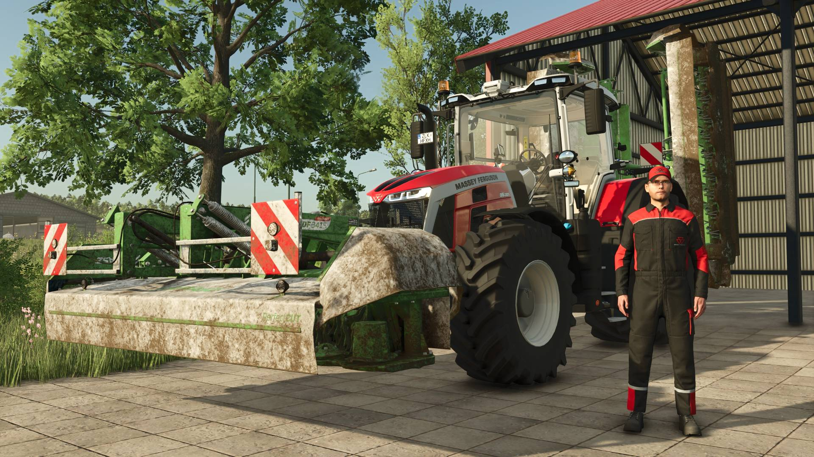
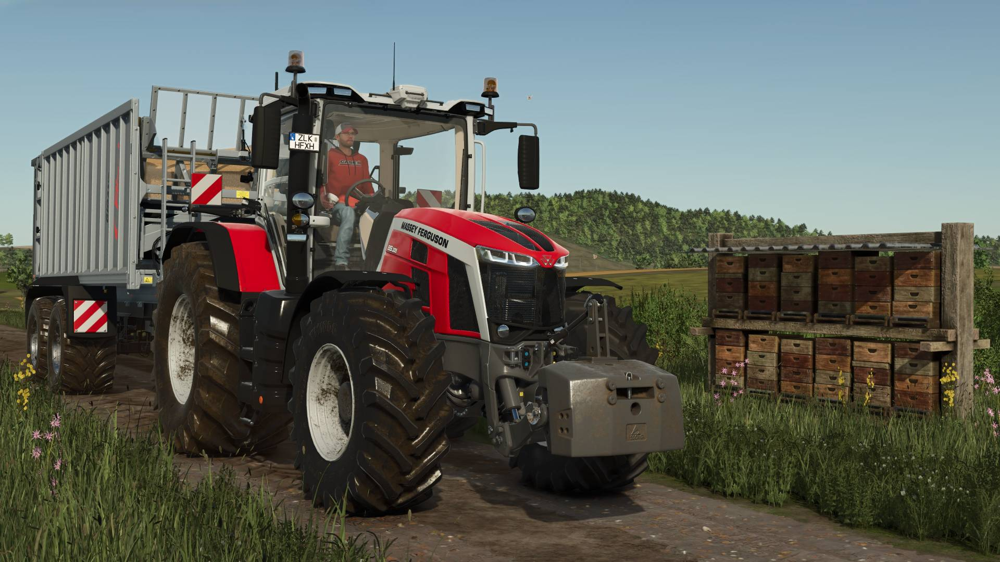
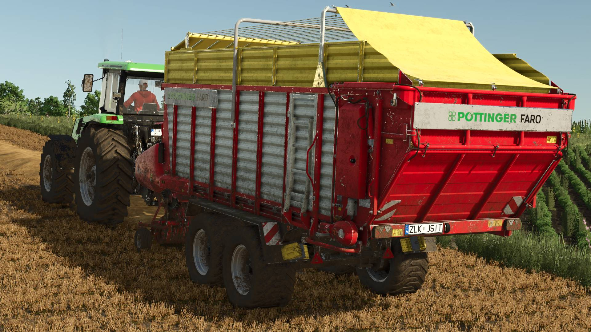
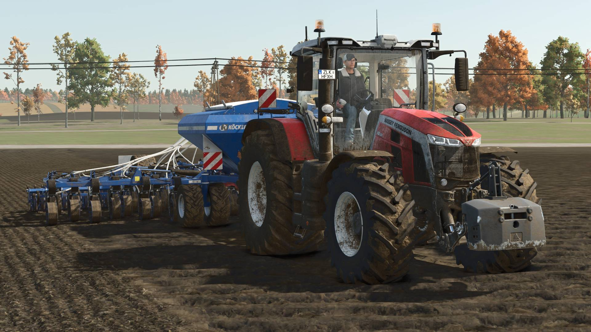

Galeria — Moje zdjęcia i projekty
Tutaj znajdziesz wybrane zdjęcia, projekty oraz inspiracje z mojej twórczości i pracy przy PC.
Galeria

Przygotowania do cięcia trawy

Żniwa rzepaku

Przejazd obok ula

Orka pola

Zestaw do obornika i gnojówki

Sprzedaż bel

Żniwa pszenicy

Głęboszowanie pola

Zbieranie trawy

Zbieranie słomy

Talerzowanie pola

Sianie pola